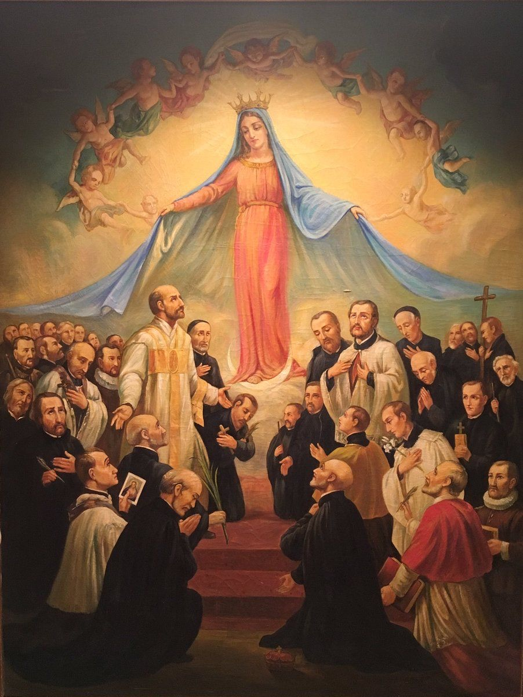

Časni sluge Božji
Svećenik
Časni sluga Božji Alfonz de Barzana
1530. – 1597.
Španjolski isusovac koji je gotovo tri desetljeća bio misionar u Peruu, Tucumánu i Paragvaju. Učio je jezike domorodačkih naroda, sastavljao za njih katekizme i rječnike te umro iscrpljen radom u Cuzcu.
Tekst je sažet i prilagođen uz pomoć umjetne inteligencije.

Izvor slike
- Spomendan
- 31. prosinca
- Zaštitništvo
- Nije navedeno u izvoru
- Životni vijek
- 1530. – 1597.
- Djelovanje
- Misije i evangelizacija · Pisanje, znanost i umjetnost · Obraćenje i novi počeci
- Razdoblje
- 16. stoljeće
- Crkveni naslov
- Časni sluga Božji
- Rođenje
- 1530., Belinchón, Španjolska
- Rođenje — dostupni podaci
- 1530.; dan i mjesec rođenja nisu provjereni.
- Država rođenja
- Španjolska
- Datum smrti
- 31.12.1597.
- Mjesto smrti/mučeništva
- Cuzco, Peru
- Uloga
- Svećenik
- Mučenik
- Ne
- Ostale oznake
- Časni sluga Božji – nema liturgijskog spomendana; u direktoriju naveden na dan smrti.
- Pripadnost
- Isusovac
- Drugi oblici imena
- Alonso de Barzana · Alonso
- Priznanje herojskih kreposti
- 18. prosinca 2017., Franjo
U kalendaru zbirke naveden je dan smrti.
Životopis
Alfonz de Barzana rođen je oko 1530. u Belinchónu u pokrajini Cuenca. Otac mu je bio putujući liječnik, pa se obitelj više puta selila; nakon očeve smrti nastanila se oko 1545. u Baezi. Ondje je mladić upoznao krug učenika sv. Ivana Avilskoga. Jedna propovijed potaknula ga je na dubok obrat i godine strogoga pokorničkog života. Na sveučilištu u Baezi stekao je magisterij iz umjetnosti i bakalaureat iz teologije, a za svećenika je zaređen 1555.
U Družbu Isusovu stupio je 1565., a četiri godine poslije otplovio je u Peru. Prema predaji, bio je ispovjednik posljednjega inkanskog vladara Túpaca Amarua I. Godine 1577. poslan je u misiju Juli na obali jezera Titicaca, jednu od prvih isusovačkih misija među domorocima. Ondje je naučio ajmarski i služio se njime u navještaju. Oko jedanaest godina proveo je na području današnje Bolivije.
Provincijal Juan de Atienza poslao ga je zatim u Tucumán, na sjever današnje Argentine. Ondje je s malobrojnom subraćom djelovao među narodima Calchaquí dolina i Gran Chaca, a potom i u Paragvaju. Iz Asuncióna je 8. rujna 1594. napisao pismo s pomnim opisom tamošnjih naroda i njihovih jezika. Pripisuje mu se praktično poznavanje jedanaest domorodačkih jezika, za koje je sastavljao gramatike, rječnike i katekizme; većina tih rukopisa nije sačuvana.
Posljednje razdoblje života proveo je u Peruu. Poslanju među domorodačkim narodima posvetio je gotovo tri desetljeća svećeničkoga života, krećući se golemim i teško prohodnim prostranstvima od Anda do rijeke Paragvaja. Iscrpljen dugim i napornim radom, umro je u Cuzcu 31. prosinca 1597.
Život i nasljeđe
Spomen na Barzanu ostao je živ osobito u Tucumánu, gdje je za njegov rad doznao i Jorge Mario Bergoglio. Kao papa Franjo poticao je povijesna istraživanja koja su pripremila postupak. Biskupija Cuzco otvorila je postupak za njegovo proglašenje blaženim u ožujku 2016., a papa Franjo odobrio je 18. prosinca 2017., u audijenciji s kardinalom Angelom Amatom, pročelnikom Kongregacije za proglašenje svetih, objavu dekreta o njegovim herojskim krepostima. Otada nosi naslov časnoga sluge Božjega.
Njegovo nasljeđe najviše se vidi u misionarskoj metodi koja je navještaj vezala uz strpljivo učenje jezika i upoznavanje kulture naroda. Pismo iz Asuncióna objavljeno je 1885. i danas je vrijedan izvor za poznavanje naroda Tucumána. Sačuvan je i rukopis o jeziku Toba, objavljen 1893. Mjesto njegova ukopa nije pouzdano utvrđeno u dostupnim izvorima.
Tekst je sažet i prilagođen uz pomoć umjetne inteligencije.
Pročitaj više na izvornoj stranici ↗
Izvori
- Životopis — Alfonz de Barzana, isusovački misionar u Južnoj Americi
- Enciklopedijski životopis — Alonso de Bárcena (španjolski)
- Katolička enciklopedija — Alonzo de Barcena
- Enciklopedijski životopis i podaci o postupku — Alonzo de Barcena (engleski)
- vaticannews.va — biografski podaci
- ewtnnews.com — biografski podaci